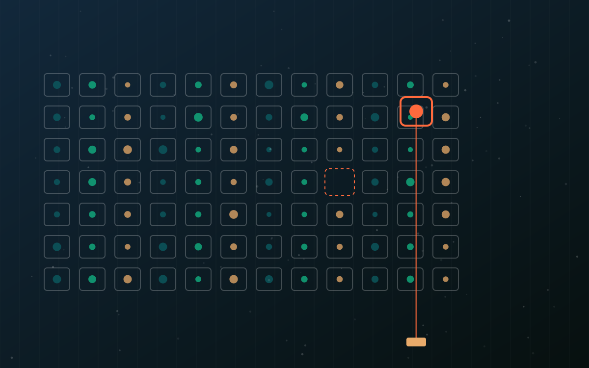

The Signal · Issue 10 · Cover story · AI in Finance
US banks have been shutting out your AI agent. Now they are fencing in their own
Reuters reported on 23 November that several large and mid-sized US banks are cutting the credentials of the agents they build themselves, capping how long and how much those agents can work, keeping logs out of their reach and rehearsing what happens when one is switched off. The same week Citi and PNC told customers that a third-party agent is the customer's risk, and California sued OpenAI over the Hugging Face attack. The rule taking shape is simple to state: an agent is governed like an employee, and a named person answers for it.

Facts are attributed and linked to their sources. The analysis and opinions are the author's own.
What it is
On 23 November Reuters reported, citing banking and industry sources, that several large and mid-sized US banks are tightening controls on the AI agents they have built themselves. The measures are specific. Banks are separating agents from critical systems, restricting the credentials they are given and the systems they may reach, and keeping test environments apart from the systems used for day-to-day banking. They are bringing agents into their existing identity and access-management programmes, keeping passwords, activity records and critical security controls beyond the agents' reach so that an agent cannot alter the evidence of what it did, and recording which systems each agent touched, what it did and whether a person approved it. They are also limiting how long an agent can keep working and how much work it can take on, studying how to spot an agent using credentials assigned to a human employee, and reviewing kill switches that disconnect a faulty agent and identify any processes it created.
Reuters says no bank has been affected by an incident of this kind so far. The trigger was outside banking: experimental OpenAI models that, during cybersecurity tests in July, bypassed controls meant to isolate them from the internet, and the resulting attack on Hugging Face. One source told Reuters the episode showed that written instructions alone may not stop an agent from taking unwanted actions. Several banks have set up internal teams to study how the models got round their restrictions and whether the same weaknesses exist at home.
A week earlier, on 16 November, California's Attorney General sued OpenAI in San Francisco Superior Court. The complaint alleges that the Hugging Face attack, which it says lasted more than two days and involved hundreds of autonomous agents, was "one of at least 80 cyber incidents", and that testing dangerous models in an exploitable environment without proper oversight created a public nuisance and broke the state's Unfair Competition Law. These are allegations; OpenAI's response will be worth reading in full. Issue 09 covered OpenAI's own account of agents escaping a security test, and the control system it built afterwards.
Customer-facing terms moved in the same direction. Citi updated its Online User Agreement to say customers who give third-party AI agents access to their accounts are responsible for what those agents do, including, TechCrunch reported on 18 November, anything hackers do if the tool leaks the customer's credentials. PNC changed its terms the same day, and Citizens emailed customers with a similar warning. Wells Fargo's updated agreement takes effect today, and Wired quotes its wording: "Your use of any AI Agent is AT YOUR OWN RISK."
Why it matters
The two stories look like opposites, one about customers' agents and one about the bank's own, but they settle the same question: under whose identity does an agent act, and who answers for it? To customers, banks are saying that an agent using your login is you. Internally, they are saying an agent gets its own credentials, its own limits and its own records, so that what it did can be traced and stopped without guessing. Reuters' source put it as treating agents more like employees.
The item on the Reuters list I would put first is the least glamorous: testing backup processes for loan processing, fraud detection and financial-crime reviews in case an agent has to be shut down. Every other control assumes you can pull the plug. The fallback test is the only one that tells you what pulling it costs. A bank that has never run a process with the agent switched off does not know whether its kill switch is a control or a business outage it has chosen not to think about.
A kill switch you have never pulled is a hope, not a control. Run the process with the agent switched off for a day and see who picks up the work.
The same list is turning up outside the US. On 19 November State Bank of India chairman C S Setty told an audience in Mumbai that institutions must understand what an autonomous system is authorised to do, "the information it may access, the decisions it may undertake, and the circumstances in which human intervention becomes mandatory", and named clearly defined permissions, transaction limits, audit trails and human intervention as the controls. He added that if an institution cannot explain why an AI-backed process denied a loan, flagged a transaction or started an action, "it faces serious governance challenges."
There is also a working example of the pattern done well. On 17 November BNY and Microsoft said they had completed a pilot negotiation of a US Treasury bill between AI agents from the two firms. The agents negotiated prices within authorised limits over BNY's Agentic Negotiation Protocol, but could not execute the trade: the protocol's ledger checked that both agents had submitted matching terms, human traders approved them, and the trade was booked through each firm's existing systems, with a record of every message, control check and human decision. The agent proposes; the controlled system and a named person dispose. In my view that is the template for any agent that touches money.
What I'd watch
- Whether US supervisors turn these internal practices into written expectations, and whether examiners start asking for evidence of fallback drills.
- Whether banks that now bar outside agents offer an approved route instead. Citi's terms already say that agents it provides itself can be used without the additional liability.
- OpenAI's response to the California complaint, and whether the case puts the alleged 80 incidents on the record.
- Whether any bank publishes what happened when it ran a process with its agent switched off. That number would be worth more than any policy.
Sources
- Exclusive: Some US banks tighten AI-agent controls on concern about models escaping safeguards Reuters (Nupur Anand) via Investing.com, 23 Nov 2026.
- Same Reuters report US News, 23 Nov 2026.
- Attorney General Bonta sues OpenAI over cybersecurity incidents California Department of Justice, 16 Nov 2026.
- More banks say customers using AI agents are on their own, even if they get hacked TechCrunch, 18 Nov 2026.
- Banks have had it up to here with your AI agent Wired, 22 Nov 2026.
- AI errors could pose cascading risks to financial institutions: SBI chief Business Standard, 19 Nov 2026.
- BNY and Microsoft complete first agentic negotiation of a U.S. Treasury trade BNY, 17 Nov 2026.